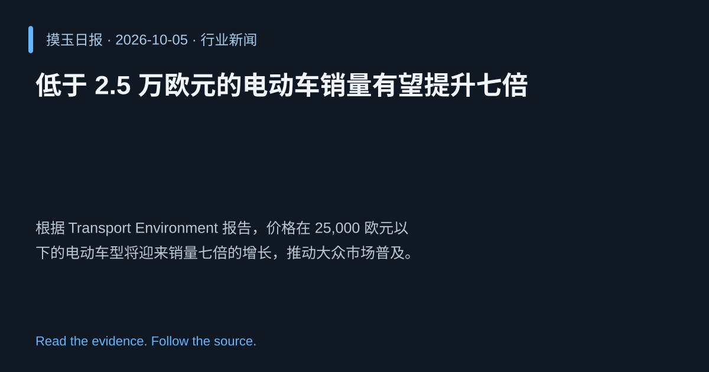

2026-10-05 · Asia/Shanghai · 行业新闻 · #3
低于 2.5 万欧元的电动车销量有望提升七倍
Sales of sub-€25,000 electric car models set to rise sevenfold
根据 Transport Environment 报告，价格在 25,000 欧元以下的电动车型将迎来销量七倍的增长，推动大众市场普及。
为什么值得关注
价格突破是加速电动车普及、实现碳中和目标的关键因素。
- 可负担的电动车吸引更多消费者。
- 销量激增将促使供应链加速扩容。
- 有助于欧盟实现交通脱碳政策。

热度 47.5 / 100；排名与评分保留该期记录。